Authentication
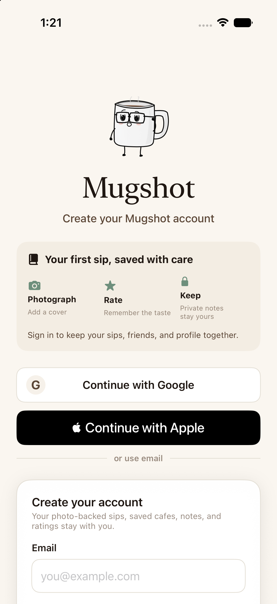
Mixed
Welcoming identity; form starts low in the viewport. Busy/error feedback should stay near the active field. R2, R16.
00-auth.pngCurrent baseline screens, observed in the Home V4 checkout. These are audit evidence, not proposed designs. The recommendation IDs connect each screen to the prioritized polish plan.
Isolated Simulator fixtures; People, Edit, and recovery are previews. Haptic feel, production transactions, actual VoiceOver speech, and device performance are unverified. Onboarding page 7 is not retained.

Welcoming identity; form starts low in the viewport. Busy/error feedback should stay near the active field. R2, R16.
00-auth.png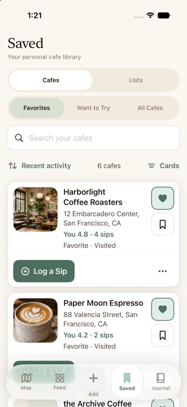
Useful cards and clear relationships. Dense control stack and uneven action feedback. R3, R7, R11.
01-saved.jpg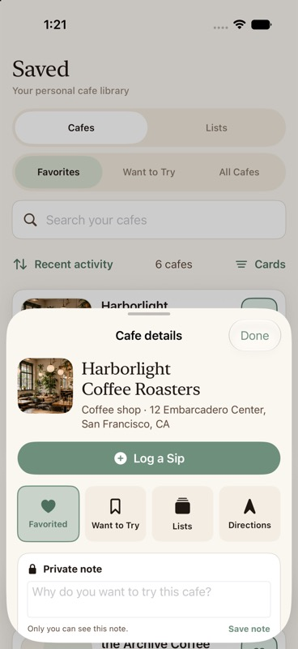
Good native sheet. Small utility/note labels and inconsistent save acknowledgment. R2, R7, R8.
02-cafe-detail.jpg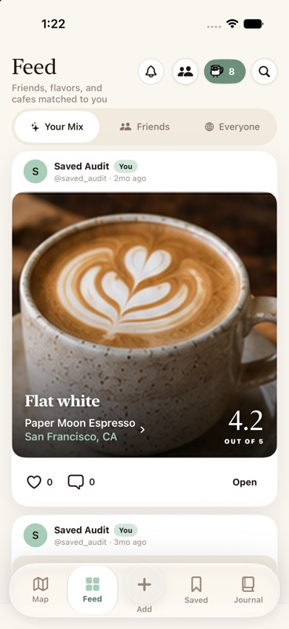
Photography is a strong anchor. Header crowding and haptic ownership need refinement. R4, R11.
03-feed.jpg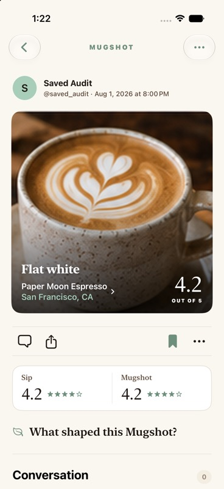
Keep the editorial media and collapsible breakdown. Consolidate action feedback and edit receipts. R4, R13.
04-sip-detail.jpg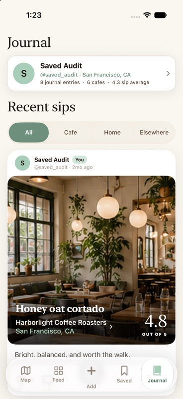
Recent memories read clearly. Connect a newly saved sip back to this existing destination. R6, R11.
05-journal.jpg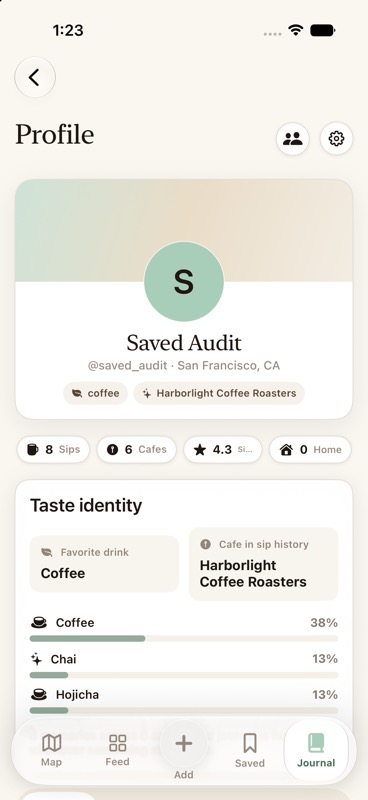
Taste identity fits Mugshot. Sip-average stat label truncates at default size. R2, R11.
06-profile.jpg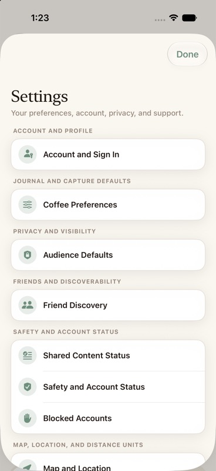
Calm grouping is appropriate. Keep status, typography, and native form behavior consistent. R2, R14, R16.
07-settings.jpg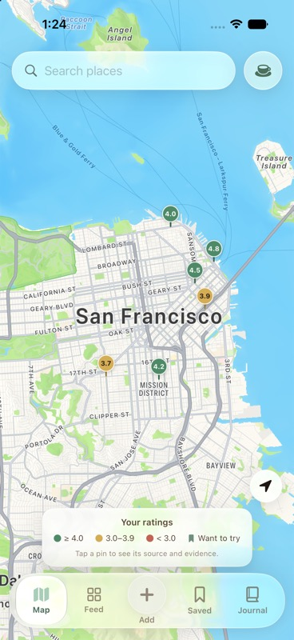
Native map and rating pins fit well. Selection can connect more clearly to the cafe sheet. R8.
08-map.jpg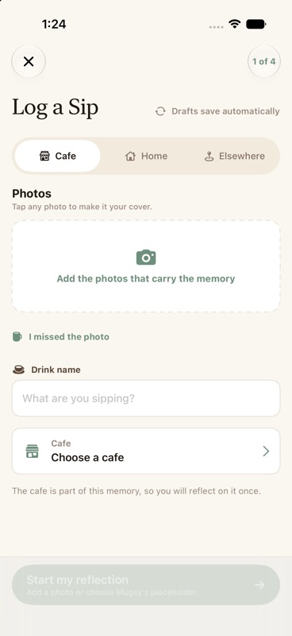
Clear optionality and draft reassurance. Make common controls feel immediate and photo handling coherent. R3, R10.
09-composer-setup.jpg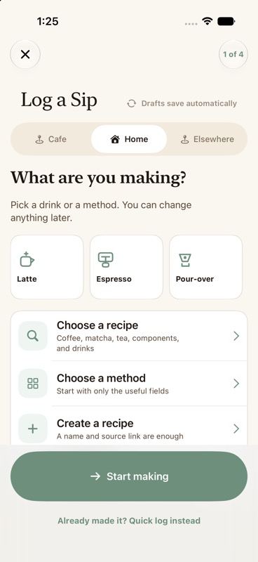
Method and drink identities are useful. Keep identity stable as setup changes. R5, R10.
10-home-setup.jpg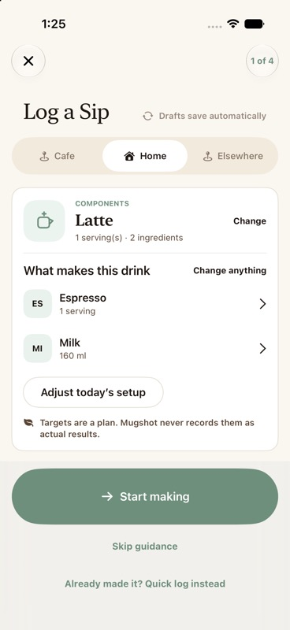
Clear components and explicit target policy. Preserve this distinction on later screens. R1, R5.
11-home-configure.jpg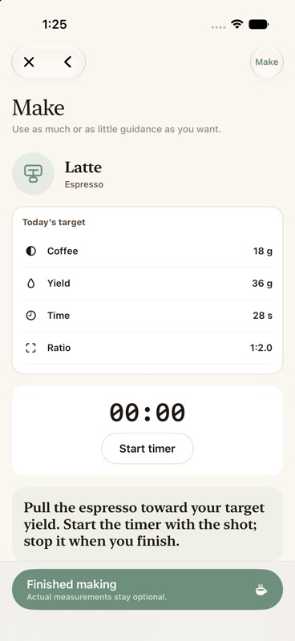
Useful targets and monospaced timer. Start/stop/finished deserve small, restrained acknowledgment. R10.
12-home-make.jpg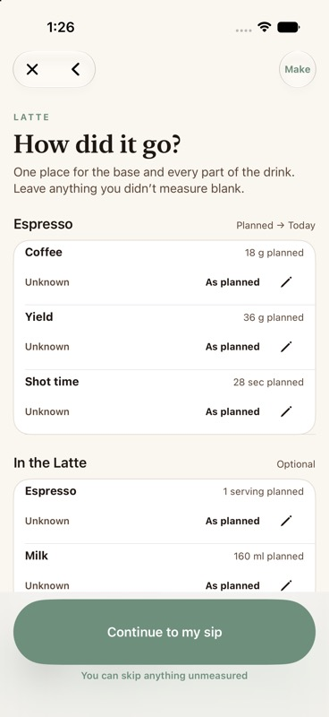
Explicit Unknown and As planned distinction is excellent. All actuals were left blank in this walkthrough. R1, R10.
13-home-actuals.jpg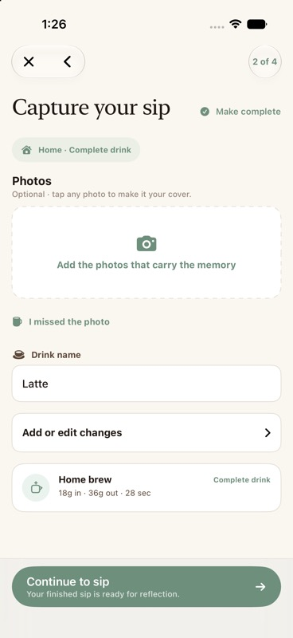
Unlabeled 18 g in / 36 g out / 28 sec summary follows unknown actuals. Label these as planned. R1.
14-home-capture.jpg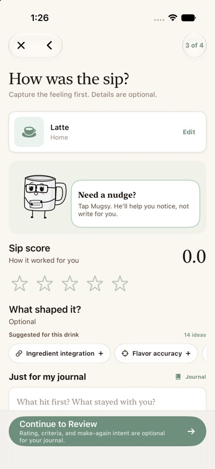
Optional rating currently displays 0.0. Add a crisp half-star response and Not rated state. R1, R4, R9.
15-home-reflection.jpg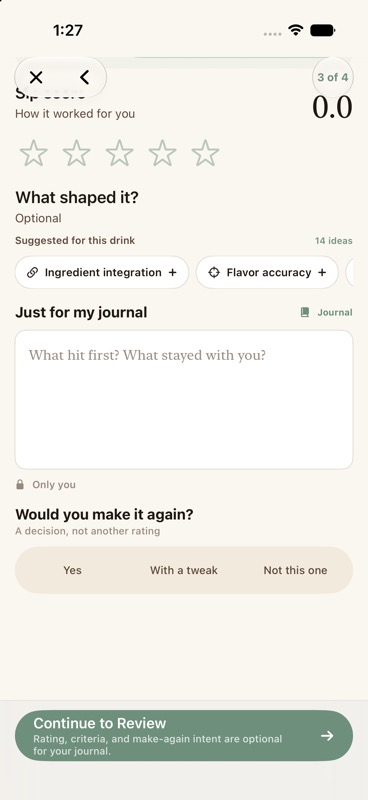
Thoughtful separate decision. Preserve optionality and writing space. R5, R9.
16-home-reflection-lower.jpg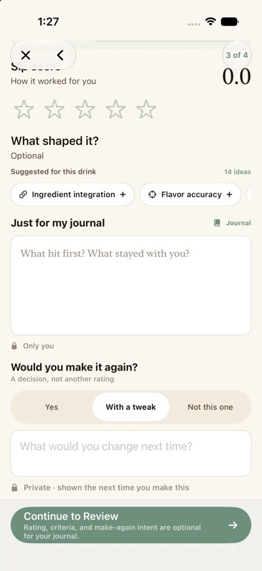
Next-time field appears in place. Give it a short contextual reveal without forcing keyboard focus. R5, R9.
17-home-tweak.jpg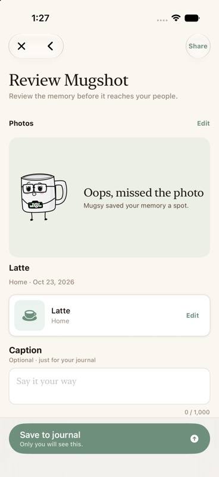
Share/reaches your people language conflicts with a private save; optional photo omission says Oops. R1, R6.
18-home-review.jpg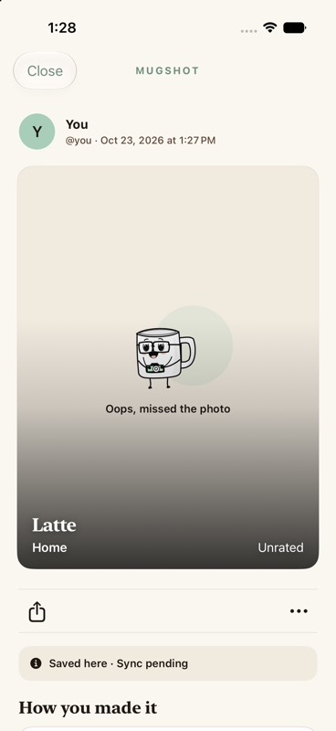
Local save succeeds and Unrated is correct. Saved here / Sync pending is understated beneath the hero. R6.
19-home-saved.jpg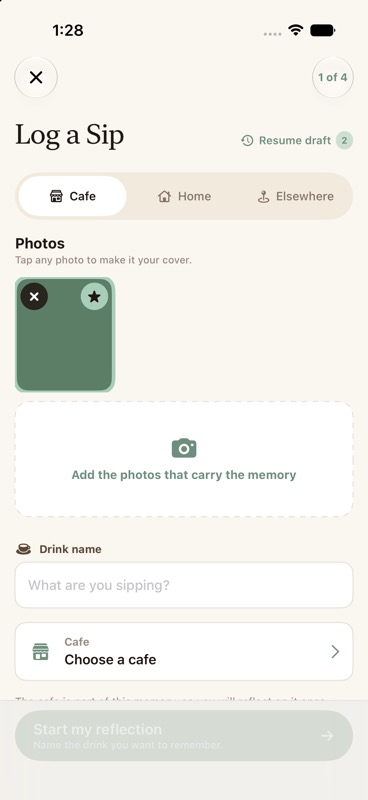
Solid green image is deliberate fixture content. Preserve useful draft/cover controls and refine local feedback. R3, R10.
20-cafe-setup.jpg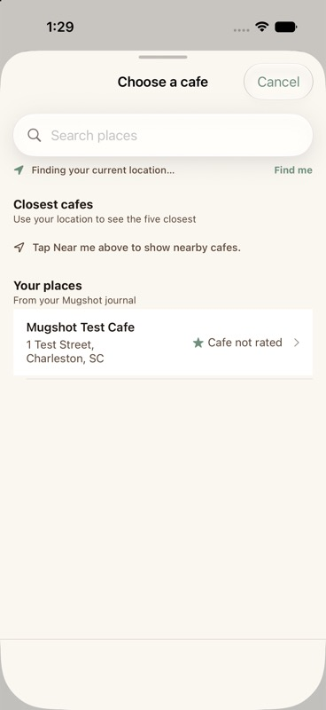
Existing places are clear. Instruction says Near me while the action says Find me. R12.
21-cafe-search.jpg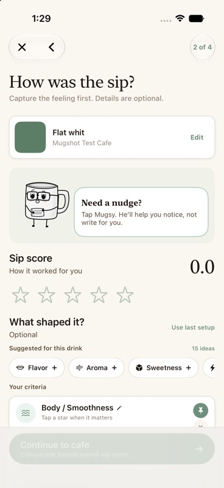
Score is primary but optional criteria/coaching are visually heavy. Half-star feedback is missing in this active control. R4, R9, R11.
22-cafe-sip-rating.jpg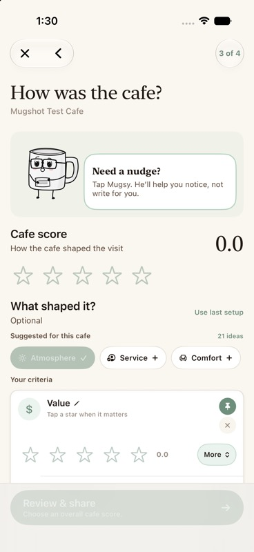
Separate cafe judgment is clear. Keep new criterion feedback local and lighten repeated supporting hierarchy. R4, R9, R11.
23-cafe-reflection.jpg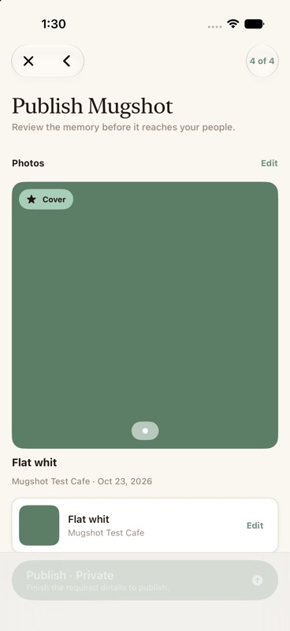
Caption/audience lie below the first viewport. Disabled footer should name the missing requirement. No post submitted. R1, R6, R12.
24-cafe-review.jpg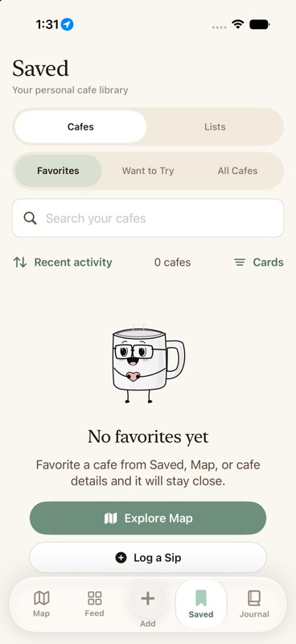
Friendly Mugsy and clear next actions. Simplify unhelpful empty sorting/density emphasis. R12.
25-saved-empty.jpg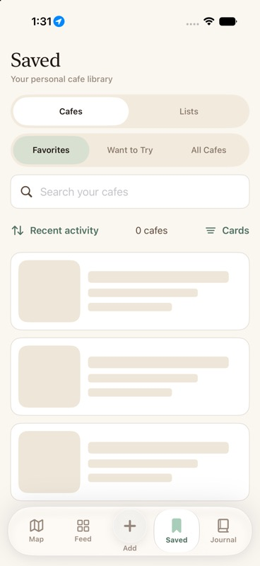
Calm skeletons are good; 0 cafes should not describe unknown data. R12.
26-saved-loading.jpg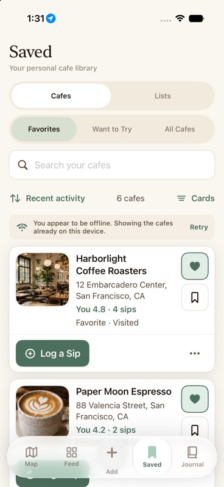
Keep usable cached cards and compact retry status. No repeated warning haptics. R12.
27-saved-offline.jpg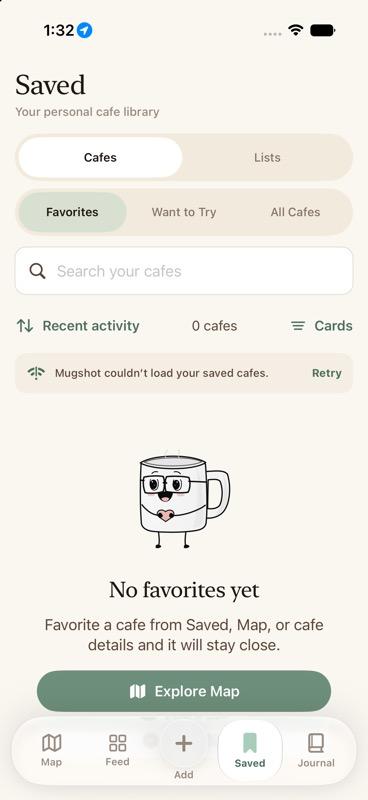
Could not load and No favorites yet contradict each other. Render an error state, not a known-empty claim. R12.
28-saved-error.jpg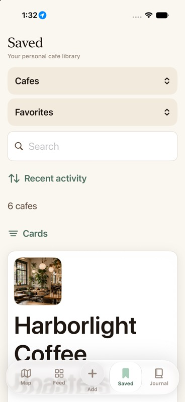
Adaptive filter menus are strong. Continue checking typography, scrolling, footer reachability, and actual assistive focus. R2, R14.
29-saved-large-text.jpg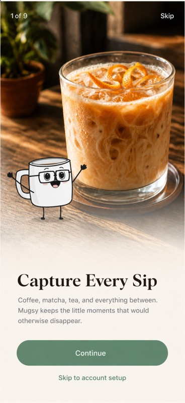
Distinctive coffee imagery and Mugsy. Raster text/control artwork cannot independently reflow. R15.
30-onboarding.jpg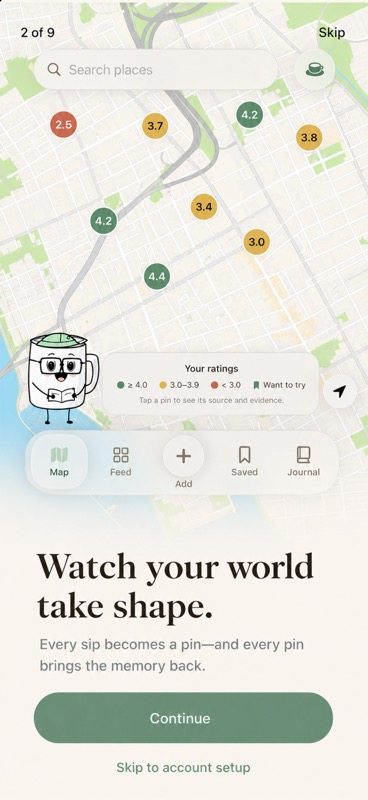
Map story is clear. Preserve native accessible visible controls when refining presentation. R15.
30-onboarding-2.jpg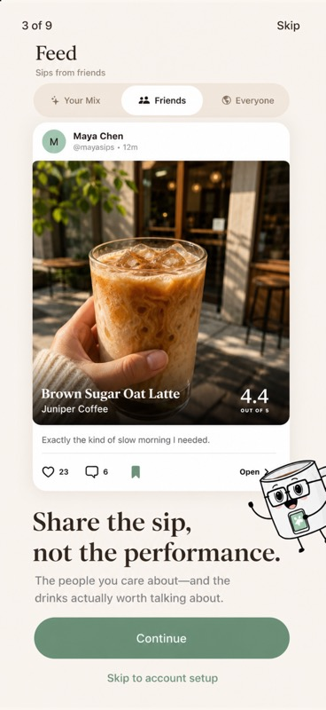
Warm social story. Keep pace fast and Skip available. R15.
30-onboarding-3.jpg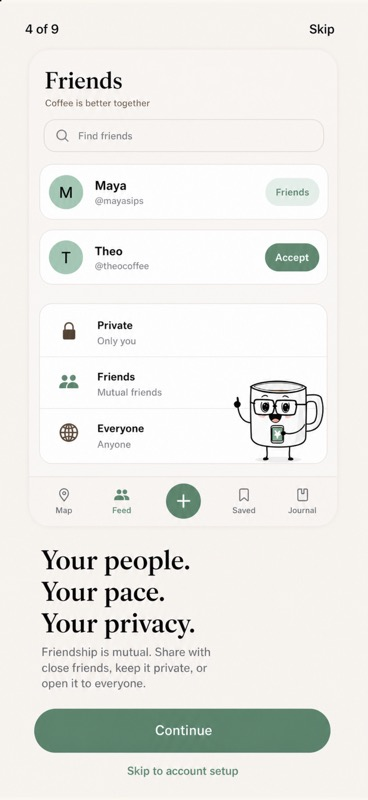
Privacy is explained positively. Maintain precise audience language and scalable text. R15.
30-onboarding-4.jpg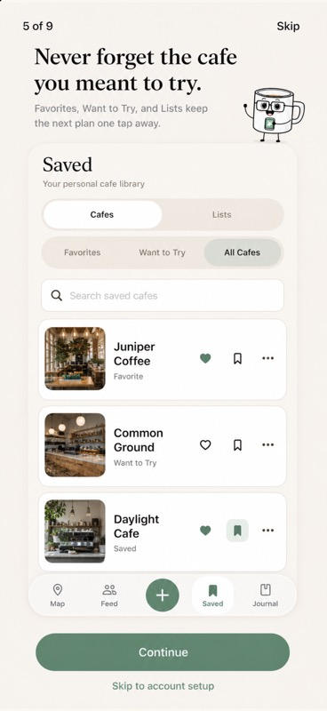
Useful existing destinations. Keep visuals aligned with current app labels. R15.
30-onboarding-5.jpg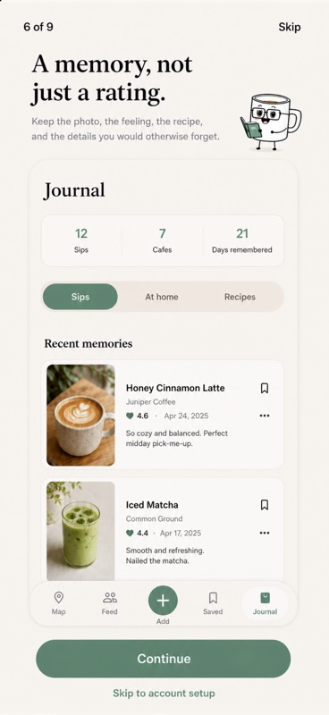
Authored Journal image depicts an older filter/tab arrangement. Update depicted UI during artwork refinement. R15.
30-onboarding-6.jpg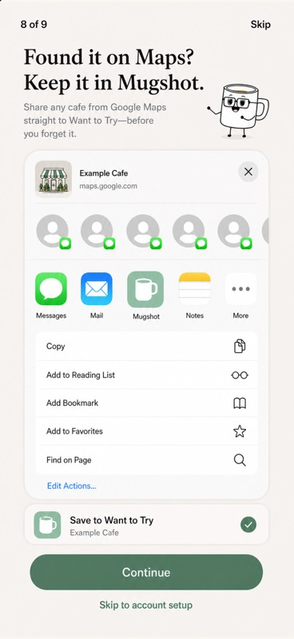
Clear existing import story. Page 7 was not retained in this audit; no claim of complete panel capture. R15.
30-onboarding-8.jpg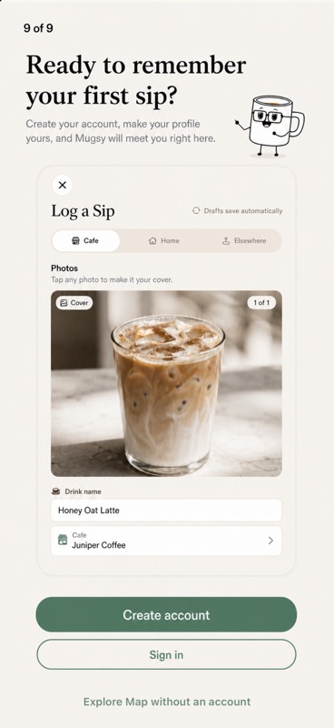
Account and guest exits are visible. No account action was submitted. R15, R16.
30-onboarding-9.jpg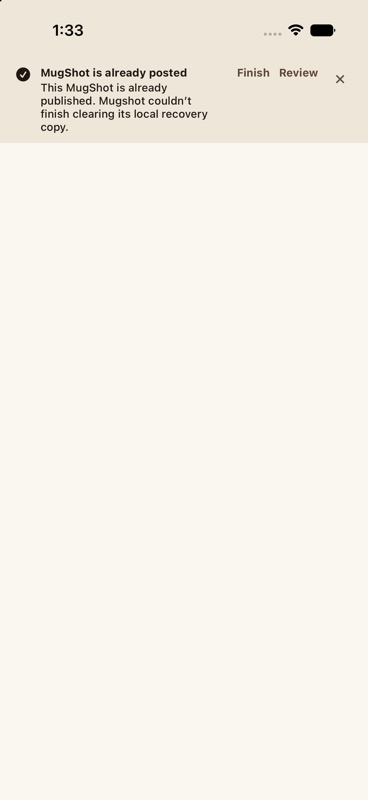
Isolated preview, not the full app. Posted versus unfinished local cleanup is truthful but copy/actions are dense. R12, R14.
31-recovery.jpg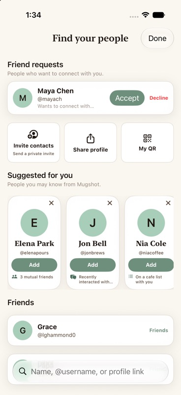
Existing DEBUG fixture. Explanations/reasons truncate; accepting should acknowledge the committed row state. R2, R13.
32-people.jpg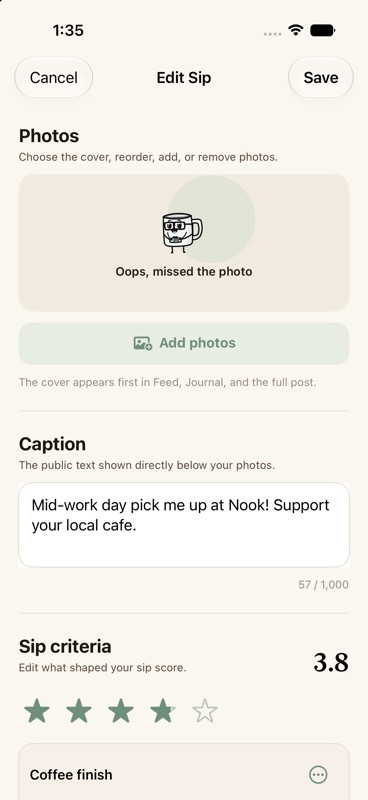
Existing DEBUG fixture. Preserve editing, improve no-photo language, and show a destination save receipt. R1, R13.
33-edit.jpg